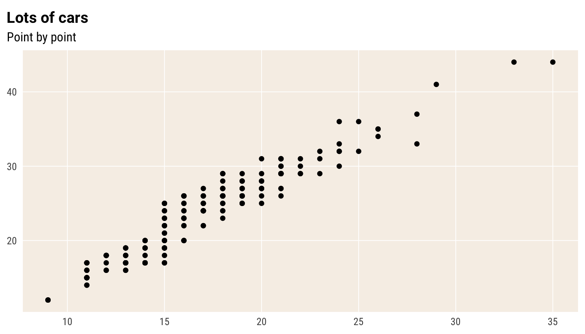
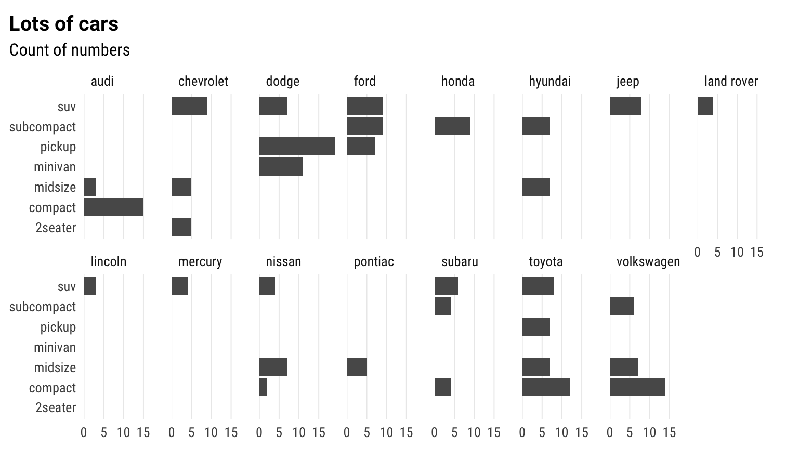

reschola and chartsThis document assumes two things:
It also does not reiterate the principles of data visualisation, though it does point to some resources in that vein.
You can set the theme for your whole Rmarkdown document (or session, for that matter) by putting theme_set(theme_schola()). Then you don’t need to add it to your plots. As theme_schola() has parameters which you are likely to need, this seems impractical and anyway could be confusing.
theme_schola()
reschola contains the theme_schola() theme, which has
The examples below serve as (a) guide to the parameters of the theme, (b) test, and (c) showcase.
Resolution and sizes can be off on this page. The templates contained in this package are optimised to produce great looking and properly sized charts in Word documents.
First, let’s see the default plot, no theme
p <- ggplot(mpg) +
geom_bar(aes(y = class)) +
labs(title = "Lots of cars", subtitle = "Count of numbers")
pNow let’s see what theme_schola() defaults do
p +
theme_schola("x") # only setting the first parameter to get the right gridlinesin combination with flush_axis
p +
theme_schola("x") +
scale_x_continuous(expand = flush_axis)Scatterplot
ggplot(mpg) +
geom_point(aes(cty, hwy)) +
theme_schola("scatter") +
labs(title = "Lots of cars", subtitle = "Point by point")
Smaller text, flush plot alignment
ggplot(mpg) +
geom_point(aes(cty, hwy), alpha = .2) +
theme_schola("scatter", base_size = 9, margin_side = 0) +
labs(title = "Lots of cars", subtitle = "Point by point")If you are adding a caption in your Rmarkdown chunk, you may also want margin_bottom = 0 to cut the bottom margin in the plot and move the caption closer to the plot.
theme_schola()
ggplot(mpg) +
geom_point(aes(cty, hwy), alpha = .2) +
theme_schola("scatter", base_size = 12, margin_side = 0) +
labs(title = "Lots of cars", subtitle = "Point by point") +
theme(panel.background = element_rect(fill = "lightpink"))
p +
theme_schola("x", multiplot = T) +
scale_x_continuous(expand = flush_axis) +
facet_wrap(~ manufacturer, nrow = 2)Same without aesthetic adjustment for facet_wrap()
p +
theme_schola("x", multiplot = F) +
scale_x_continuous(expand = flush_axis) +
facet_wrap(~ manufacturer, nrow = 2)
Small mutliples scatter
ggplot(mpg) +
geom_point(aes(cty, hwy), alpha = .2) +
theme_schola("scatter", multiplot = T) +
labs(title = "Lots of cars", subtitle = "Point by point") +
facet_wrap(~ class, nrow = 2)Small mutliples grid
p +
theme_schola("x", multiplot = T) +
scale_x_continuous(expand = flush_axis) +
facet_grid(cyl ~ drv)Small mutliples scatter grid
ggplot(mpg) +
geom_point(aes(cty, hwy), alpha = .2) +
theme_schola("scatter", multiplot = T) +
labs(title = "Lots of cars", subtitle = "Point by point") +
facet_grid(cyl ~ class)Same but without multiplot parameter
ggplot(mpg) +
geom_point(aes(cty, hwy), alpha = .2) +
theme_schola("scatter", multiplot = F) +
labs(title = "Lots of cars", subtitle = "Point by point") +
facet_grid(cyl ~ class)The chartb below illustrates the custom scales
ggplot(mpg, aes(hwy * 100, cty/max(cty))) +
geom_point(aes(colour = cty/max(cty), size = hwy*100)) +
theme_schola() +
scale_y_percent_cz() +
scale_x_number_cz() +
scale_color_binned(labels = label_percent_cz()) +
scale_size_binned(labels = label_number_cz()) The percent formatter and number formatter also handle the decimal mark correctly. The parameters which you would normally find inside the scales::format_*() functions are accessible directly in the scale_[xy]_continuous() functions.
ggplot(mpg, aes(hwy / 100, cty/max(cty)/100)) +
geom_point(aes(colour = cty/max(cty), size = hwy*100)) +
theme_schola() +
scale_y_percent_cz(accuracy = .1) +
scale_x_number_cz(accuracy = .1) +
scale_color_binned(labels = label_percent_cz(accuracy = .1)) +
scale_size_binned(labels = label_number_cz(accuracy = 0.1))An English-locale version would look like this, using functions in scales or reexported from hrbrthemes:
ggplot(mpg, aes(hwy * 100, cty/max(cty))) +
geom_point(aes(colour = cty/max(cty), size = hwy*100)) +
theme_schola() +
scale_y_percent(accuracy = .1) +
scale_x_comma(accuracy = .1) +
scale_color_binned(labels = scales::label_percent(accuracy = .1)) +
scale_size_binned(labels = scales::label_number(accuracy = .1))The schola_[word|redoc] formats have opinionated sizing defaults to ensure that resolution, size and font size in the bitmap (PNG) image are in line with the rest of the document. This is particularly tricky in the context of Word documents, hence the baked in defaults. For this reason, the steps to change images sizes are a bit special - see below.
Here is what the defaults are:
Here is how to manipulate image sizes without messing up anything else, in Word:
fig.asp chunk option to more or less than 0.62fig.width and out.width to the same size in centimeters, e.g. for half-width you would do fig.width=7.98/2.54, out.width="7.98cm" (because fig.width is set in inches). Note the quotes around the out.width value - this is a special thing for pandoc to ensure the sizing is reflected in the layout of the Word document. The height in this case will be 7.98 * 0.62 cm (see above)fig.asp param as per above.For HTML output, you can use e.g. out.width="50%".
For PDF output, you can just set fig.width in inches and the height using fig.asp as above, as long as you use the pdf or cairo_pdf device (using the dev option in the chunk or at per-document level.) Note that the font handling might be a bit tricky for PDF depending on your system.
Image sizing works quite differently between output formats (HTML, PDF, Word). For that reason it is probably the one thing that will look odd or break if you try to render a document written in a reschola template into HTML or PDF without fiddling with sizing, graphic devices or font handling.
The schola_theme() is set to use the Roboto and Roboto Condensed font families by default. These may not be present on your system. You can install them by running reschola::import_fonts(). (once per machine, and do follow the instructions in the message output when you call this function.) On package load, these will be registered with R. If the fonts do not show up in your charts, run extrafont::loadfonts() (once per session). You can also set the option reschola.loadfonts to have reschola register these fonts with the PDF/PostScript ecosystem upon package load. (The fonts may or may not work out of the box when you render into PDF depending on your system - if not, first try using the cairo_pdf device and/or running extrafont::embed_fonts() on the whole resulting PDF document.)
If you end up using different fonts, it is good to choose something that (a) has fixed-width figures in the default set of characters, and (b) has sensible widths or a narrow-width member of the type family (usually called “Condensed”, “Narrow” or some such.)
The hrbrthemes package has a good range of fonts, some of which tick these criteria. Arial Narrow is narrow and has fixed-width figures. IBM Plex Sans, Titillium Sans and Econ Sans all have fixed width figures but not all have Narrow companions.
Public Sans does not have fixed-width figures.
See the hrbrthemes vignette for an explanation of why these criteria matter
theme_void() for visuals that don’t need any gridlines, axes, etc., such as schematic mapsgeom_line() into one linekey_glyph parameter to geoms to pick a specific shape for the legend keygeom_sf_label for intelligently labelling spatial features plotted through geom_sf()
labs(colour = NULL) for switching off the colour legend, labs(x = NULL) to turn off colour label - quicker than theme(axis.label.x = element_blank()) and guides(colour = "none")
Kieran Healy. Data Visualisation: a practical introduction. With R code.
Claus Wilke. Fundamentals of Data Visualisation No R code, very strong on principles.
Beyond that and in the world of paper books, anything by Alberto Cairo is solid.
patchwork for combining multiple plots into one in a simple, intuitive way, while merging legends and aligning everyhing as neededggraph in combination with tidygraph for network dataggcorr for correlation matricesGGally with a set of utilities, incl. GGally::ggpairs()
sjPlot also provides useful visual forms, most usefully the visual and tabular summaries of model resultsggtext for formatting pretty much any text in a ggplot using Markdown/HTMLggiraph for basic web interactivityggforce for cool annotationggrepel for handling overlapping labelsgghighlight for highlighting individual points/seriesggmosaic for mosaic plotsggalluvial for Sankey diagramswaffle for waffle (square pie) charts incl Isotype-style charts using icons